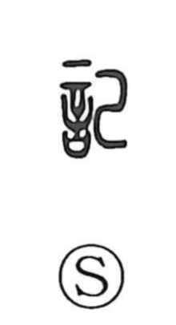

記

Kun: shirusu | On: ki
to record ・ to write down ・ document ・ account ・ to remember
Explanation
記 combines 言, words, with the sound element 己. 己 pictures a thread spool. Winding thread onto the spool gathers it into an orderly sequence; the related 紀 uses this image for arranging threads and, more broadly, establishing order.
In 記, the material being ordered is speech. Words are set down in sequence so that an event or statement can be preserved and recalled. The graph consequently means to record or write down, and it also names the record itself. What has been recorded can be retained in memory or recited again, linking the written record to remembering. 記憶 keeps this connection between preserving something and being able to call it back to mind.